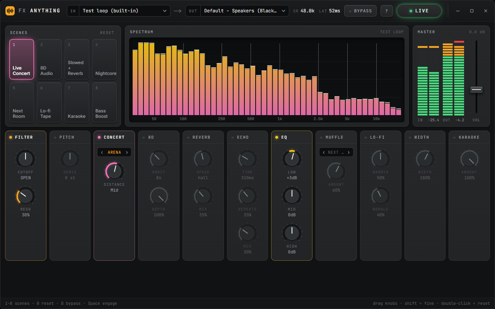

DJ Filter
One knob. Sweep left for low-pass, right for high-pass.
FREE · OPEN SOURCE · WINDOWS
Spotify, YouTube, games, anything. Route it through FX Anything and twist it live: concert halls, 8D, slowed + reverb, nightcore, a DJ filter and more.
FIG. 1 · LIVE DEMO
This is the real FX Anything engine running in your browser. Press play, tap a scene, and hold Original to compare.
SCENES
Track: "Arpeggio Synthesized Funk" by BaDoink, CC0. In the app, the same effects run on whatever your PC plays.
FIG. 2 · THE RACK
Built like studio hardware: one screen, real knobs, real meters. Everything responds instantly.

1 2 3 4 5FIG. 3 · MODULES
One knob. Sweep left for low-pass, right for high-pass.
±12 semitones without changing speed. The slowed or nightcore sound.
Club, theater, arena, stadium or festival, from the front row to the back seats.
The sound orbits your head. Best on headphones.
From a small room to infinite space.
Repeating delay with time, repeats and mix.
Low, mid and high, up to +15 dB of bass.
Next room, underwater, old radio, phone call.
Warm, wobbly tape character.
Stereo widener up to 300%.
Pulls centred vocals out of most studio mixes.
Always on, so turning things up never clips.
FIG. 4 · SIGNAL FLOW
Windows doesn't let one app grab another's sound, so a free virtual cable carries it across.
It's a free driver from vb-audio.com. Restart if it asks.
In Windows Settings → Sound → Volume mixer, set the app's output to CABLE Input.
In FX Anything, set IN to CABLE Output and OUT to your headphones or speakers.
Tap a scene or turn a knob. Press B to compare with the original.
FIG. 5 · FAQ
Yes. It's open source under the MIT license, with no account, ads or tracking.
It shifts pitch live, which gives you the "slowed" and "nightcore" sound. It can't change the speed of audio another app is still playing, because that app controls the playback.
Usually 20 to 40 ms. You won't notice it with music, but you might in fast games.
The installer isn't code-signed yet. Click More info, then Run anyway, or build it yourself from the source.
Windows is also playing the cable directly. Open mmsys.cpl, go to Recording, open CABLE Output, then the Listen tab, and untick "Listen to this device".
Set the app back to Default in the Windows volume mixer.